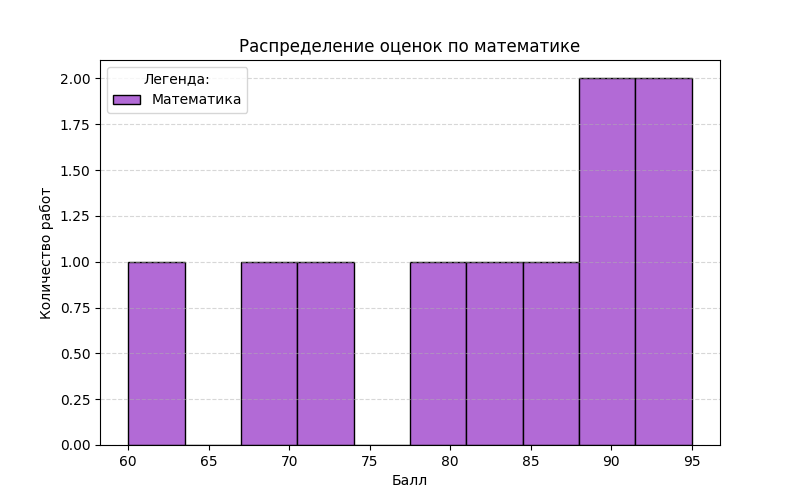
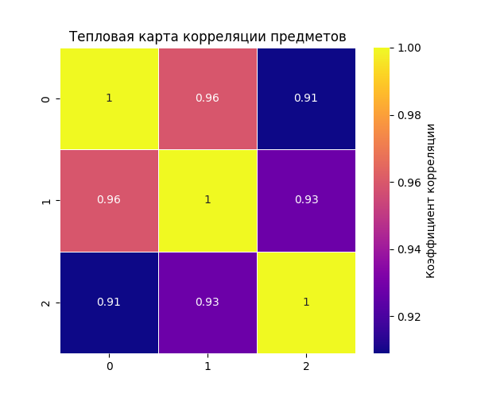
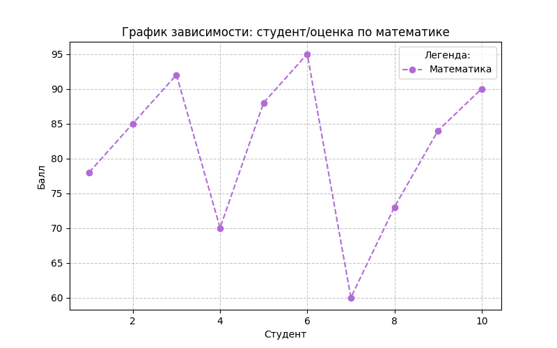
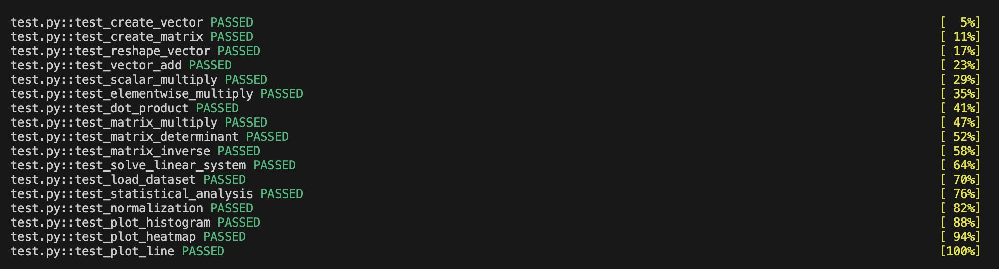
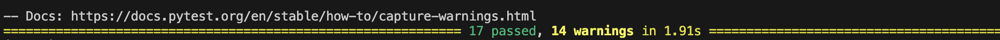

Лабораторная работа 2: Основы NumPy: массивы и векторные операции
Цели
- Освоить практическое использование библиотеки
numpyдля работы с массивами и матрицами. - Изучить применение библиотеки
pandasдля загрузки и первичного анализа табличных данных. - Освоить построение графиков и визуализаций с помощью
matplotlibиseaborn. - Закрепить навыки оформления Python-кода в соответствии с требованиями PEP-8, PEP-257 и PEP-484.
- Научиться проверять корректность решения с помощью автоматических тестов
pytest.
Задачи
В рамках лабораторной работы требовалось:
- Дополнить функции для создания и преобразования массивов, базовых операций над векторами, матричных вычислений так, чтобы они проходили необходимые тесты.
- Выполнить статистический анализ и реализовать нормализацию данных.
- Построить и сохранить графики различных типов.
- Проверить, что код аннотирован, содержит докстринг, соблюдает PEP-8.
- Проверить корректность решения при помощи тестов.
Ход работы
1. Настройка виртуального окружения и установка зависимостей
Для выполнения лабораторной работы была подготовлена отдельная директория проекта, а также создано и активировано виртуальное окружение:
python -m venv numpy_env
source numpy_env/bin/activate
pip install numpy matplotlib seaborn pandas pytest
Пояснение
Использованные библиотеки: numpy (работа с массивами, векторами и матрицами), pandas (загрузка и представление табличных данных), matplotlib (построение графиков), seaborn (создание тепловой карты), pytest (автоматическое тестирование), flake8 (проверка соответствия кода PEP-8).
2. Подготовка структуры проекта и входных данных
Внутри директории были размещены основной файл с реализацией функций (main.py), файл с тестами (test.py), каталог с исходными данными (data/) и каталог для сохранения графиков (plots/).
Итоговая структура проекта имеет следующий вид:
lab2/
├── main.py
├── test.py
├── data/
│ └── students_scores.csv
└── plots/
Пояснение
Выделение тестов в отдельный файл test.py делает структуру проекта более аккуратной и упрощает запуск автоматической проверки через pytest.
Для выполнения части лабораторной работы, связанной со статистическим анализом и визуализацией, в папке data был создан CSV-файл students_scores.csv, содержащий результаты студентов по нескольким дисциплинам:
math,physics,informatics
78,81,90
85,89,88
92,94,95
70,75,72
88,84,91
95,99,98
60,65,70
73,70,68
84,86,85
90,93,92
3. Реализация функций для работы с массивами
На первом этапе были реализованы функции, отвечающие за создание и преобразование массивов средствами numpy.
| Функция | Назначение |
|---|---|
create_vector() |
Создание одномерного массива от 0 до 9 |
create_matrix() |
Создание матрицы размера 5×5 со случайными числами |
reshape_vector(vec) |
Преобразование массива формы (10,) в матрицу формы (2, 5) |
transpose_matrix(mat) |
Транспонирование матрицы |
Примеры реализаций:
def create_vector() -> np.ndarray:
"""
Создать массив от 0 до 9.
Returns:
np.ndarray: Массив чисел от 0 до 9 включительно.
"""
return np.arange(10)
def create_matrix() -> np.ndarray:
"""
Создать матрицу 5x5 со случайными числами [0,1].
Returns:
np.ndarray: Матрица 5x5 со случайными значениями от 0 до 1.
"""
return np.random.rand(5, 5)
def reshape_vector(vec: np.ndarray) -> np.ndarray:
"""
Преобразовать вектор формы (10,) в матрицу формы (2, 5).
Args:
vec (np.ndarray): Входной массив формы (10,).
Returns:
np.ndarray: Преобразованный массив формы (2, 5).
"""
return vec.reshape(2, 5)
def transpose_matrix(mat: np.ndarray) -> np.ndarray:
"""
Транспонировать матрицу.
Args:
mat (np.ndarray): Входная матрица.
Returns:
np.ndarray: Транспонированная матрица.
"""
return mat.T
4. Реализация векторных операций
Следующим этапом были реализованы функции для работы с векторами, отвечающие за следующие операции:
| Функция | Назначение |
|---|---|
vector_add(a, b) |
Поэлементное сложение двух векторов |
scalar_multiply(vec, scalar) |
Умножение вектора на скаляр |
elementwise_multiply(a, b) |
Поэлементное умножение |
dot_product(a, b) |
Вычисление скалярного произведения |
Примеры реализаций:
def vector_add(a: np.ndarray, b: np.ndarray) -> np.ndarray:
"""
Сложить два вектора одинаковой длины.
Args:
a (np.ndarray): Первый вектор.
b (np.ndarray): Второй вектор.
Returns:
np.ndarray: Результат поэлементного сложения.
"""
return a + b
def scalar_multiply(vec: np.ndarray, scalar: float) -> np.ndarray:
"""
Умножить вектор на скаляр.
Args:
vec (np.ndarray): Входной вектор.
scalar (float): Число для умножения.
Returns:
np.ndarray: Результат умножения вектора на скаляр.
"""
return vec * scalar
def elementwise_multiply(a: np.ndarray, b: np.ndarray) -> np.ndarray:
"""
Выполнить поэлементное умножение.
Args:
a (np.ndarray): Первый вектор/матрица.
b (np.ndarray): Второй вектор/матрица.
Returns:
np.ndarray: Результат поэлементного умножения.
"""
return a * b
def dot_product(a: np.ndarray, b: np.ndarray) -> float:
"""
Вычислить скалярное произведение двух векторов.
Args:
a (np.ndarray): Первый вектор.
b (np.ndarray): Второй вектор.
Returns:
float: Скалярное произведение векторов.
"""
return float(np.dot(a, b))
5. Реализация матричных вычислений
После работы с векторами были реализованы функции для выполнения базовых матричных операций.
| Функция | Назначение |
|---|---|
matrix_multiply(a, b) |
Умножение двух матриц |
matrix_determinant(a) |
Вычисление определителя матрицы |
matrix_inverse(a) |
Нахождение обратной матрицы |
solve_linear_system(a, b) |
Решение системы линейных уравнений Ax = b |
Примеры реализаций:
def matrix_multiply(a: np.ndarray, b: np.ndarray) -> np.ndarray:
"""
Умножить две матрицы.
Args:
a (np.ndarray): Первая матрица.
b (np.ndarray): Вторая матрица.
Returns:
np.ndarray: Результат умножения матриц.
"""
return a @ b
def matrix_determinant(a: np.ndarray) -> float:
"""
Вычислить определитель матрицы.
Args:
a (np.ndarray): Квадратная матрица.
Returns:
float: Определитель матрицы.
"""
return float(np.linalg.det(a))
def matrix_inverse(a: np.ndarray) -> np.ndarray:
"""
Найти обратную матрицу.
Args:
a (np.ndarray): Квадратная матрица.
Returns:
np.ndarray: Обратная матрица.
"""
return np.linalg.inv(a)
def solve_linear_system(a: np.ndarray, b: np.ndarray) -> np.ndarray:
"""
Решить систему линейных уравнений Ax = b.
Args:
a (np.ndarray): Матрица коэффициентов.
b (np.ndarray): Вектор свободных членов.
Returns:
np.ndarray: Решение системы.
"""
return np.linalg.solve(a, b)
Примечание
Для вычисления обратной матрицы и определителя матрица должна быть квадратной, а обратимая матрица должна иметь ненулевой определитель. В тестах использовались корректные входные данные, удовлетворяющие этим условиям.
6. Загрузка, анализ и нормализация набора данных
Для работы с CSV-файлом была реализована функция загрузки данных через библиотеку pandas.
После чтения таблицы данные преобразовывались в формат numpy.ndarray, поскольку дальнейшие вычисления выполнялись средствами numpy. Затем была реализована функция статистического анализа данных. Отдельной задачей лабораторной работы была реализация Min-Max нормализации, при которой значения массива приводятся к диапазону от 0 до 1.
| Функция | Назначение |
|---|---|
load_dataset(path) |
Загрузка CSV-файла и преобразование данных в numpy.ndarray |
statistical_analysis(data) |
Вычисление основных статистических характеристик |
normalize_data(data) |
Min-Max нормализация массива |
def load_dataset(path: str = "data/students_scores.csv") -> np.ndarray:
"""
Загрузить CSV-файл и вернуть данные в виде NumPy-массива.
Args:
path (str): Путь к CSV-файлу.
Returns:
np.ndarray: Загруженные данные.
"""
return pd.read_csv(path).to_numpy()
def statistical_analysis(data: np.ndarray) -> dict[str, float]:
"""
Вычислить основные статистические показатели для массива данных.
Args:
data (np.ndarray): Одномерный массив данных.
Returns:
dict[str, float]: Словарь со статистическими показателями.
"""
return {
"mean": float(np.mean(data)),
"median": float(np.median(data)),
"std": float(np.std(data)),
"min": float(np.min(data)),
"max": float(np.max(data)),
"percentile_25": float(np.percentile(data, 25)),
"percentile_75": float(np.percentile(data, 75)),
}
Нормализация выполнялась по следующей формуле:
(x - min) / (max - min)
Реализация функции:
def normalize_data(data: np.ndarray) -> np.ndarray:
"""
Выполнить Min-Max нормализацию данных.
Формула:
(x - min) / (max - min)
Args:
data (np.ndarray): Входной массив данных.
Returns:
np.ndarray: Нормализованный массив в диапазоне [0, 1].
"""
min_value = np.min(data)
max_value = np.max(data)
return (data - min_value) / (max_value - min_value)
Примечание
Данный метод корректно работает в случае, если мин и макс значения различаются, тк если все элементы массива одинаковы, возникает деление на ноль. В рамках ЛР тесты были составлены для корректных данных.
7. Построение и сохранение графиков
Были релизованы функции для построения и сохранения трёх типов графиков:
| Функция | Назначение |
|---|---|
plot_histogram(data) |
Построение и сохранение гистограммы |
plot_heatmap(matrix) |
Построение и сохранение тепловой карты |
plot_line(x, y) |
Построение и сохранение линейного графика |
Примеры реализаций:
def plot_histogram(data: np.ndarray) -> None:
"""
Построить гистограмму и сохранить её в папку plots.
Args:
data (np.ndarray): Данные для построения гистограммы.
"""
os.makedirs("plots", exist_ok=True)
plt.figure(figsize=(8, 5))
plt.hist(data, bins=10, color="#b26ad6", edgecolor="black", label="Математика")
plt.title("Распределение оценок по математике")
plt.xlabel("Балл")
plt.ylabel("Количество работ")
plt.grid(axis="y", linestyle="--", alpha=0.5)
plt.legend(title="Легенда:")
plt.savefig("plots/histogram.png")
plt.close()

def plot_heatmap(matrix: np.ndarray) -> None:
"""
Построить тепловую карту и сохранить её в папку plots.
Args:
matrix (np.ndarray): Матрица для визуализации.
"""
os.makedirs("plots", exist_ok=True)
plt.figure(figsize=(6, 5))
sns.heatmap(
matrix,
annot=True,
cmap="plasma",
linewidths=0.5,
cbar_kws={"label": "Коэффициент корреляции"},
)
plt.title("Тепловая карта корреляции предметов")
plt.savefig("plots/heatmap.png")
plt.close()

def plot_line(x: np.ndarray, y: np.ndarray) -> None:
"""
Построить линейный график и сохранить его в папку plots.
Args:
x (np.ndarray): Значения по оси X.
y (np.ndarray): Значения по оси Y.
"""
os.makedirs("plots", exist_ok=True)
plt.figure(figsize=(8, 5))
plt.plot(x, y, marker="o", linestyle="--", color="#b26ad6", label="Математика")
plt.title("График зависимости: студент/оценка по математике")
plt.xlabel("Студент")
plt.ylabel("Балл")
plt.grid(True, linestyle="--", alpha=0.7)
plt.legend(title="Легенда:")
plt.savefig("plots/line.png")
plt.close()

8. Аннотации типов и документация
Все реализованные функции были дополнены аннотациями типов.
Примеры:
def create_vector() -> np.ndarray:
def create_matrix() -> np.ndarray:
def reshape_vector(vec: np.ndarray) -> np.ndarray:
def transpose_matrix(mat: np.ndarray) -> np.ndarray:
def vector_add(a: np.ndarray, b: np.ndarray) -> np.ndarray:
def scalar_multiply(vec: np.ndarray, scalar: float) -> np.ndarray:
def elementwise_multiply(a: np.ndarray, b: np.ndarray) -> np.ndarray:
def dot_product(a: np.ndarray, b: np.ndarray) -> float:
def matrix_multiply(a: np.ndarray, b: np.ndarray) -> np.ndarray:
def matrix_determinant(a: np.ndarray) -> float:
def matrix_inverse(a: np.ndarray) -> np.ndarray:
def solve_linear_system(a: np.ndarray, b: np.ndarray) -> np.ndarray:
def load_dataset(path: str = "data/students_scores.csv") -> np.ndarray:
def statistical_analysis(data: np.ndarray) -> dict[str, float]:
def normalize_data(data: np.ndarray) -> np.ndarray:
def plot_histogram(data: np.ndarray) -> None:
def plot_heatmap(matrix: np.ndarray) -> None:
def plot_line(x: np.ndarray, y: np.ndarray) -> None:
Также каждая функция была снабжена docstring, содержащим краткое описание назначения функции, описание аргументов и описание возвращаемого значения.
9. Проверка кода и тестирование
Для проверки корректности лабораторной работы использовались автоматические тесты pytest.
После реализации всех функций тесты были вынесены в отдельный файл test.py, а затем успешно выполнены.
Запуск тестов:
python3 -m pytest test.py -v
Результат выполнения тестов:


Кроме того, код был проверен на соответствие стилевым требованиям PEP-8 с помощью flake8:
flake8 main.py
Выводы
В ходе выполнения лабораторной работы были освоены базовые возможности библиотек numpy, pandas, matplotlib и seaborn для решения типовых задач анализа данных.
В рамках ЛР были реализованы функции для:
- Создания и преобразования массивов
- Выполнения векторных и матричных вычислений
- Загрузки и обработки табличных данных
- Вычисления статистических характеристик
- Нормализации данных
- Визуализации результатов
Дополнительно код был приведён к требованиям PEP-8, PEP-257 и PEP-484, а его корректность подтверждена автоматическими тестами pytest.